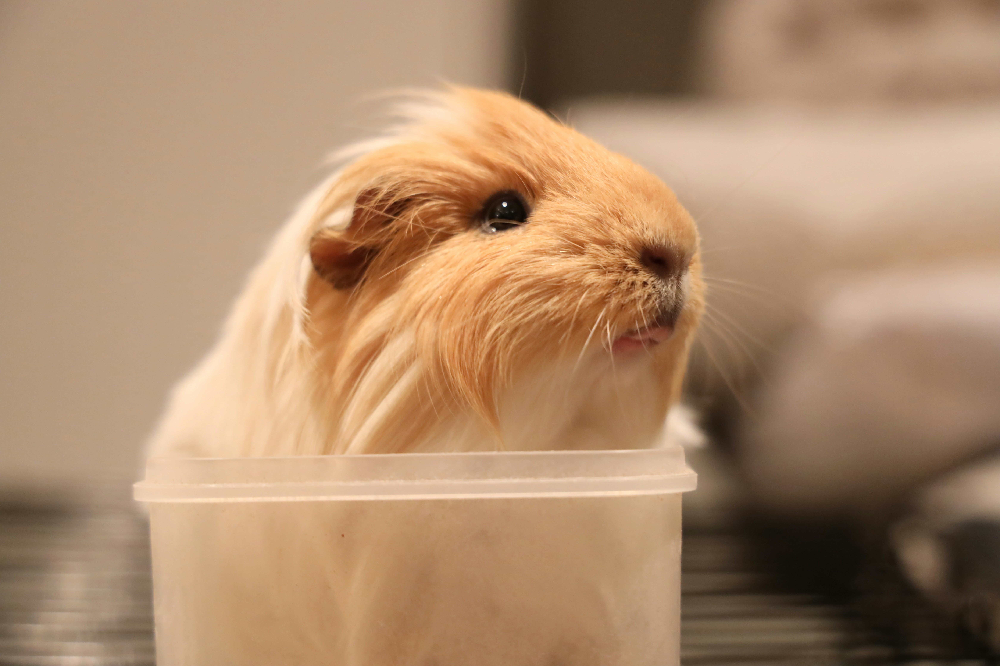

The raccoon (/rəˈkuːn/ or US: /ræˈkuːn/ ⓘ, Procyon lotor), sometimes called the North American, northern or common raccoon (also spelled racoon)[3] to distinguish it from other species of raccoon, is a mammal native to North America. It is the largest of the procyonid family, having a body length of 40 to 70 cm (16 to 28 in), and a body weight of 5 to 26 kg (11 to 57 lb). Its grayish coat mostly consists of dense underfur, which insulates it against cold weather. The animal's most distinctive features include its extremely dexterous front paws, its facial mask, and its ringed tail, which are common themes in the mythologies of the Indigenous peoples of the Americas surrounding the species. The raccoon is noted for its intelligence, and studies show that it can remember the solution to tasks for at least three years. It is usually nocturnal and omnivorous, eating about 40% invertebrates, 33% plants, and 27% vertebrates.

Hamsters are rodents (order Rodentia) belonging to the subfamily Cricetinae, which contains 19 species classified in seven genera.[1][2] They have become established as popular small pets.[3] The best-known species of hamster is the golden or Syrian hamster (Mesocricetus auratus), which is the type most commonly kept as a pet. Other hamster species commonly kept as pets are the three species of dwarf hamster, Campbell's dwarf hamster (Phodopus campbelli), the winter white dwarf hamster (Phodopus sungorus) and the Roborovski hamster (Phodopus roborovskii), and the less common Chinese hamster (Cricetulus griseus).

The cat (Felis catus), also called domestic cat and house cat, is a small carnivorous mammal. It is an obligate carnivore, requiring a predominantly meat-based diet. Its retractable claws are adapted to killing small prey species such as mice and rats. It has a strong, flexible body, quick reflexes, and sharp teeth, and its night vision and sense of smell are well developed. It is a social species, but a solitary hunter and a crepuscular predator. Cat communication includes meowing, purring, trilling, hissing, growling, grunting, and body language. It can hear sounds too faint or too high in frequency for human ears, such as those made by small mammals. It secretes and perceives pheromones. Cat intelligence is evident in its ability to adapt, learn through observation, and solve problems. Female domestic cats can have kittens from spring to late autumn in temperate zones and throughout the year in equatorial regions, with litter sizes often ranging from two to five kittens.